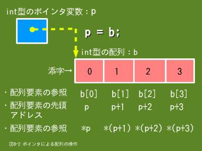

8. データをアドレスで操作するためのポインタ（2/3）
8.3 ポインタによる変数の操作
ポインタ変数を使って、指し示す先の変数の値を操作するには間接参照演算子（*）を使用します。間接参照演算子はポインタ変数の前に指定します。間接参照演算子の*はポインタ変数を宣言するときに指定する*とは（使う記号は同じでも）別物ですので注意してください。
8.3.1 形式
※ 変数の値の参照
*ポインタ変数名;
※ 変数への値の設定（代入）
*ポインタ変数名 = 値;
- *ポインタ変数名
- ポインタ変数の指し示す先の変数の値を示します。
- *ポインタ変数名 = 値
- ポインタ変数の指し示す先の変数に値を代入します。
8.3.2 例題
この例題はポインタ変数を使う必然性はないのですが、ポインタ変数の使い方を説明するために使っています。
#include <stdio.h>
int main()
{
short number;
int age;
float weight;
float height;
double bmi;
char blood_type;
/* ポインタ変数の宣言 */
short *p_number;
int *p_age;
float *p_weight;
float *p_height;
double *p_bmi;
char *p_blood_type;
/* ポインタ変数へのアドレスの設定 */
p_number = &number;
p_age = &age;
p_weight = &weight;
p_height = &height;
p_bmi = &bmi;
p_blood_type = &blood_type;
/* ポインタ変数を使って変数へ値の代入 */
*p_number = 1;
*p_age = 20;
*p_weight = 65.5;
*p_height = 1.735;
*p_blood_type = 'A';
/* 肥満度(BMI) = 体重(kg) / 身長(m) / 身長(m) */
*p_bmi = *p_weight / *p_height / *p_height;
/* 結果の表示 */
printf("・番号：%d\n", *p_number);
printf("・年齢：%d\n", *p_age);
printf("・血液型：%c\n", *p_blood_type);
printf("・肥満度：%.3f\n", *p_bmi);
return 0;
}
$ ./ex08_2.prg
・番号：1
・年齢：20
・血液型：A
・肥満度：21.759
$
- 28〜32行目
- ポインタ変数を使って変数に値を代入します。
- 35行目
- ポインタ変数を使って肥満度の計算を行います。
- 38〜41行目
- ポインタ変数を使って結果を表示します。
8.4 ポインタによる配列の操作
- 
- 【図８-２】ポインタによる配列の操作
配列の各要素の値を操作するには、配列名に添字（各要素を識別するための０から始まる番号）を指定することになります。例えば、図8-2の配列bの場合、先頭要素はb[0]、次の要素はb[1]のように指定することにより操作ができます。
これと同じことをポインタ変数を使って行うことができます。ポインタ変数を使う場合、まず、ポインタ変数に配列の先頭アドレスを設定する必要があります。図8-2の場合は次の操作により、ポインタ変数pに配列bの先頭アドレスを設定できます。
p = b;
次の要素（添字では１）の先頭アドレスは、この値に１を加算することにより得ることができます。さらに、次の要素（添字では２）の先頭アドレスは２を加算することにより得ることができます。このように、ポインタの演算により、各要素の先頭アドレスを得ることができます。図8-2の場合は次の演算になります。
p;またはp + 0;、p + 1;、p + 2;、p + 3;
配列要素の大きさは型名により異なります。コンパイラの種類にもよりますが、一般的にint型は４バイト、double型は８バイトとなります。このため、ポインタの演算で次の要素の先頭アドレスを求める場合、int型の配列ではp + 4;、double型の配列ではp + 8;と思われるかもしれませんが、Ｃ言語の場合は型名に関係なく、次の要素の先頭アドレスはp + 1;で求めることができます。これはコンパイラが各型名の大きさを認識していますので、わざわざ人間が配慮しなくてもよいようになっているからです。
先頭アドレスを取得できれば、間接参照演算子（*）を使って各要素の操作（参照・更新）ができます。図8-2の場合は次の様になりますが、括弧を使ってポインタの演算の方の優先順位を上げなくてはいけませんので注意してください。
*p;または*(p + 0);、*(p + 1);、*(p + 2);、*(p + 3);
演算子には優先順位がありますが、間接参照演算子（*）と加算演算子（+）を比べた場合、間接参照演算子のほうが優先順位が高くなっています。従って、*p + 1;の場合、ポインタ変数pの指し示す配列要素の値に１を加算することになります。一方、p + 1を括弧で括って優先順位をあげて*(p + 1);にすると、ポインタ変数pの指し示す配列要素の次の要素の値を参照することになります。
8.4.1 形式
ポインタの演算は+と-の演算子を使って、加算と減算ができます。（乗算と除算はできません）
配列名は配列の先頭アドレスを値として持つ定数と考えられますので、配列名をポインタ変数のように取り扱うことができます。ただし、定数ですので値の変更はできません。例えば、「配列名 + 1;」はできますが「配列名 = 配列名 + 1;」はできません。
一方、ポインタ変数は変数ですので値の変更ができますので、「ポインタ変数名 = ポインタ変数名 + 1」は可能です。
※ ポインタの演算
ポインタ変数名 + n;
ポインタ変数名 - n;
配列名 + n;
※ 配列要素の参照
*(ポインタ変数名 + n);
*(ポインタ変数名 - n);
*(配列名 + n);
*++ポインタ変数名;
*--ポインタ変数名;
- ポインタ変数名 + n;
- ポインタ変数の指し示す先の配列要素のn個先の要素の先頭アドレスです。
- ポインタ変数名 - n;
- ポインタ変数の指し示す先の配列要素のn個前の要素の先頭アドレスです。
- 配列名 + n;
- 配列のn番目の要素の先頭アドレスです。
- *(ポインタ変数名 + n);
- ポインタ変数の指し示す先の配列要素のn個先の要素の値です。
- *(ポインタ変数名 - n);
- ポインタ変数の指し示す先の配列要素のn個前の要素の値です。
- *++ポインタ変数名
- ポインタ変数の指し示す先の配列要素の次の要素の値です。ポインタ変数の値も次の要素の先頭アドレスになります。
- *--ポインタ変数名
- ポインタ変数の指し示す先の配列要素の前の要素の値です。ポインタ変数の値も前の要素の先頭アドレスになります。
8.4.2 例題
例題１
この例題は配列の説明のときに使った文字列の文字数をカウントするもの（ex07_3）をポインタを使って書き換えたものです。ここでは配列名を使っています。
#include <stdio.h>
int main()
{
char mojiretu[11];
int counter;
/* 文字列の入力 */
printf("10文字以下の半角文字列を入力してください ==> ");
scanf("%s", mojiretu);
for(counter = 0; *(mojiretu + counter) != '\0'; ++counter)
;
/* 入力文字数の出力 */
printf("「%s」の文字数は%dです\n", mojiretu, counter);
return 0;
}
$ ./ex08_3.prg
10文字以下の半角文字列を入力してください ==> Hello
「Hello」の文字数は5です
$
- 11行目
- 前処理でint型変数counterに０を設定し、繰り返しの条件判定で配列mojiretuのcounter番目の要素の値がヌル文字かどうかをチェックします。後処理でcounterの値を更新します。
例題２
上記例題と機能は同じですがポインタの演算を使っています。
#include <stdio.h>
int main()
{
char mojiretu[11];
int counter;
char *p_mojiretu;
/* 文字列の入力 */
printf("10文字以下の半角文字列を入力してください ==> ");
scanf("%s", mojiretu);
counter = 0;
for(p_mojiretu = mojiretu; *p_mojiretu != '\0'; ++p_mojiretu)
{
++counter;
}
/* 入力文字数の出力 */
printf("「%s」の文字数は%dです\n", mojiretu, counter);
return 0;
}
- 6行目
- 配列mojiretu用のポインタ変数p_mojiretuの宣言です。配列mojiretuの型名はchar型ですので、このポインタ変数の型名もchar型になります。
- 13行目
- 前処理でポインタ変数p_mojiretuに配列mojiretuの先頭アドレスを設定し、繰り返しの条件判定でポインタ変数p_mojiretuが指し示す配列要素の値がヌル文字かどうかをチェックします。後処理でポインタ変数p_mojiretuの値を次の配列要素の先頭アドレスに更新します。なお、「
*p_mojiretu != '\0'」は「*p_mojiretu」としても同じです。（Ｃ言語の場合、式の値が０は論理値として偽となり、０以外は真となります）